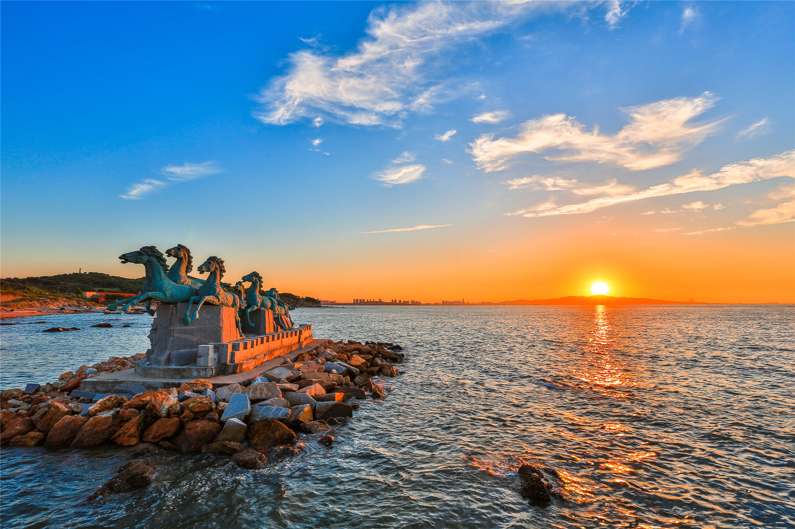


    <!DOCTYPE html lang="zh-CN">
    
    <head>
        <meta charset="utf-8">
        <title>山东烟台</title>
        <meta http-equiv="Content-Type" content="text/html; charset=utf-8">
        <meta name="viewport" content="initial-scale=1.0, user-scalable=no">
        <meta http-equiv="X-UA-Compatible" content="IE=Edge">
        <style>
            body,
            html,
            #container {
                overflow: hidden;
                width: 100%;
                height: 100%;
                margin: 0;
                font-family: "微软雅黑";
            }
        </style>
        <script src="//api.map.baidu.com/api?type=webgl&v=1.0&ak=rD0sqkpjfxk8vGoHE1c4gjmbc1zpqEuk"></script>
    </head>
    <body>
        <div id="container">

        </div>
    
<script>
var map = new BMapGL.Map('container');
map.centerAndZoom(new BMapGL.Point(121.63, 37.47), 12);
map.enableScrollWheelZoom(true);

var marker = new BMapGL.Marker(new BMapGL.Point(121.63, 37.47));
map.addOverlay(marker);

var sContent = `<h4 style='margin:0 0 5px 0;'>养马岛</h4>
    
    <p style='margin:0;line-height:1.5;font-size:13px;text-indent:2em'>
    养马岛，山东省烟台市牟平区海岛。位于牟平区城区以北9公里处，面积13.52平方公里。养马岛又称象岛，因相传秦始皇东巡时曾在此养马而得名。养马岛是牟平港的北部屏障，也是牟平区的渔业水平区。
    养马岛以其秀丽的山海和宜人的气候，被称为“东方夏威夷”。1980年代开始进行旅游开发，岛内有赛马场、海水浴场等多处景点及40多处专用和公共疗养接待设施，是一处融体育、娱乐与海滨休闲度假为一体的综合性旅游胜地。至2008年，为中国国家AAAA级旅游景区。
    </p></div>`;
var infoWindow = new BMapGL.InfoWindow(sContent);

marker.addEventListener('click', function () {
    this.openInfoWindow(infoWindow);

    document.getElementById('imgDemo').onload = function () {
        infoWindow.redraw(); 
    };
});
</script>
</body>
</html>
